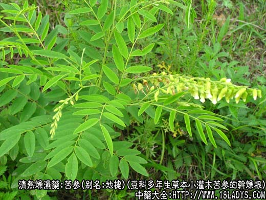
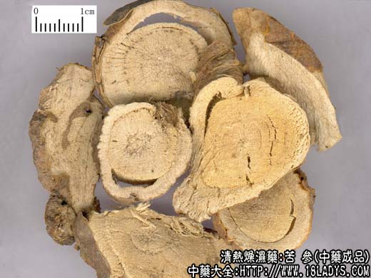
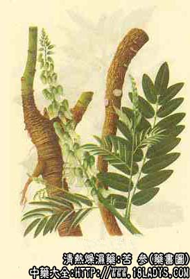

苦参为较常用中药。《神农本草经》列为中品。
别名：地槐、白茎地骨、山槐、野槐。
来源：为豆科植物多年生类草本小灌木苦参（野槐）的干燥根。野生或栽培。
产地：主产于河北、山西、河南、湖北等省。全国大部地区有产。
植物形态：小灌木高50~120厘米，根圆柱形有分歧，外皮黄绿色或黄褐色。茎枝丛生草本状，嫩枝有纵沟，有黄色绒毛。奇数羽状复叶形似槐叶，总状花序顶生，花冠蝶形黄白色。花萼钟状，稍偏斜。荚果线形，先端尖如鸟喙。种子数枚近球形，成熟后黑色。
性状鉴别：根圆柱形，长10~40厘米，上粗下细，直径约1~3厘米。有分歧，外表皮棕黄色或褐色，皮薄多破裂。易剥落，质坚硬，不易折断，断面粗纤维状，黄白显射线纹理，有裂隙。苦参多在生鲜时切为不规则的厚片或段，厚长约1~3厘米。气微，味极苦，有豆腥味。
以根条顺长均匀，内淡黄白色，无枯朽者为佳。
主要成分：含苦参硷。
功效与作用：1、利尿、解热：实验证实有利尿作用。
2、抗真菌：体外试验对多种皮肤真菌有不同程度抵制作用。
3、抗滴虫。
炮制：切片，生用。
性味：苦寒。
归经：入心、肝、大小肠经。
功能：清热除湿，利尿、祛风，杀虫。
主治：湿热痢疾，小便不利，疥癣疮毒。
临床应用：主要用于治疗湿疹、疮疖、女阴瘙痒等皮肤病，以外用为主。可单用苦参30g煎汤外洗，或配合其它药，如皮肤止痒方。又可用于治疗菌痢、肠炎，以苦参9g、配木香9g、甘草2.4g，水煎服。
据报道，近年来，苦参治疗蓝氏贾第鞭毛虫病有一定疗效。但总的来说，苦参用于洗方或丸方中较适宜，不可多用于汤剂。最近，国内有用苦参注射液治疗痢疾肠炎等，又用苦参配枯矾等制成软膏，配樟脑等制成酊剂治皮癣，均有一定疗效。
苦参大苦大寒，肝肾虚而无热者不宜服。
用量：3~15g。